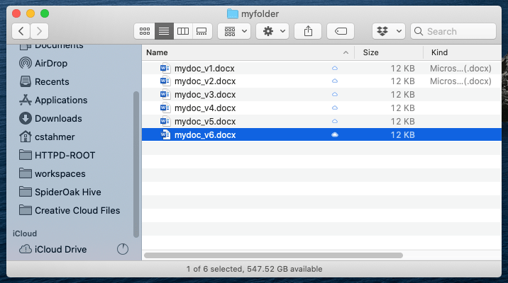
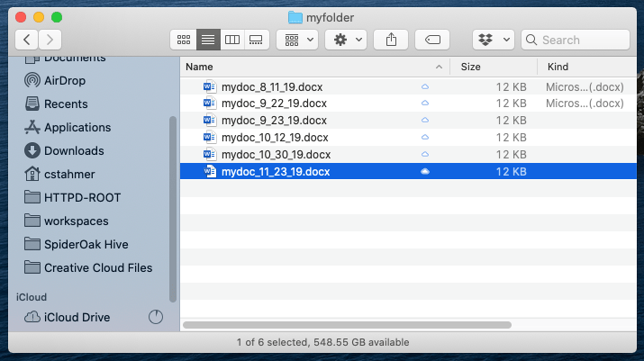

1. Version Control Systems#
Learning Goals
After this lesson, you should be able to:
Explain the purpose of using a version control system (VCS)
Explain the difference between centralized and distributed version control
Explain what a repository is
Explain what Git is
1.1. What is Version Control?#
Version control is the process of storing and organizing multiple versions (or copies) of files on your computer. Approaches to version control range from simple to complex and they can involve the use of both manual and automatic workflows.
Chances are good that you’re already doing some kind of version control yourself. You might have a directory somewhere on your computer that looks something like this:

Or perhaps this:

This is a rudimentary form of version control where it’s completely up to you to name, save, and keep track of multiple versions of a file. This filesystem approach works minimally well, in that it does provide you with a history of file versions theoretically organized by their time sequence. But this system provides no information about how the file has changed from version to version, why you might have saved a particular version, or specifically how the various versions are related. This approach is also subject to human error. It’s easy to make a mistake when naming a file version, or to go back and edit a file without saving a new copy.
1.2. Version Control Systems#
A version control system (VCS) is software designed to automate version control. Version control systems originated in the software development community, where it’s common for many people to work on the same file, sometimes synchronously, amplifying the need to track and understand revisions. But nearly all types of computer files, not just code, can be tracked using modern version control systems.
Historical Note
IBM’s OS/360 IEBUPDTE software update tool is widely regarded as the earliest and most widely adopted precursor to modern version control systems. Its release in 1972 of the Source Code Control System (SCCS) package marked the first fully-fledged system designed specifically for software version control.
Most version control systems keep track of changes to a collection of files called a repository. Generally, a repository (or repo) is just a directory where you’ve set up a version control system to keep track of changes to the contents. A repository can contain any number of files and subdirectories.
Tip
How many repositories to create is up to you, and depends on how you like to work, but we recommend that you create a separate repository for each distinct project.
In order to make it easy to collaborate, most version control systems also provide a way to create multiple copies of a repository and share changes between them. Version control systems can be divided into two categories based on how they do this:
Centralized version control systems store the repository and its history on a single computer. This computer is usually a server, a computer connected to the Internet or some other network. Users can check out a copy of the repository from the server, make changes, and then check in their changes with the server. The server is the sole authority on the repository’s history. You can think of this as a “hub and spoke” model, where the server is the hub and users are the spokes. This is the oldest kind of version control system.
Distributed version control systems treat each copy of the repository as an authority on the repository’s history, and provide ways to sync changes and resolve conflicts between copies. As two different users make changes to their copies of the repository, the copies will diverge if both users edit the same file. The divergence will remain in place until the two copies are synced, at which time the VCS merges the two different versions of the file into a single version that reflects the changes made by both users. You can think of this as a “network” model (like a social network).
Centralized VCS provide a very ordered and controlled universe. They ensure users have access to the most recent version of every file in the repository, which reduces the potential for conflicting changes to files.
Historical Note
Early centralized version control systems typically required users to check out individual files or directories rather than entire repositories, and only allowed one user to check out a given file at time. This prevented conflicting edits, but made it difficult to work concurrently.
On the other hand, distributed VCS offer greater flexibility. They allow users to work alone or in small groups, work offline, or work on experimental changes over an extended period without losing the benefits of version control. These characteristics facilitate collaborative work. Moreover, a distributed VCS can be used in a centralized way, where one copy of the repository is treated as the final authority on the repository’s history. This gives users the best of both worlds, by allowing some to sync directly with each other while others sync with this authoritative copy.
The most popular VCS today is Git, a distributed VCS. Some polls estimate that more than 90% of all developers use Git. A few other version control systems in use today include Mercurial, Subversion, Perforce, and Plastic SCM. Many document editors, such as Google Docs and Microsoft Word, also have built-in version control systems. Each of these systems offers a twist on version control, differing sometimes in the area of user functionality, sometimes in how they handle things on the back-end, and sometimes both. In this reader, we’ll focus on Git.
Important
Git is available for Windows, macOS, and Linux.
Install Git by following the instructions for your computer’s operating system:
On Windows, download Git from the Git downloads page. We recommend the default installation options, which also install Git Bash. You’ll need Git Bash to follow along with this workshop.
On macOS, there are many ways to install Git. The easiest is generally to install Xcode by opening a terminal and entering:
git --version
Then follow the prompts to install Xcode. If you prefer not to install Xcode (it is quite large), installing Git with a package manager such as Homebrew, MacPorts, or Pixi is also okay.
On Linux, we recommend installing Git with your distribution’s package manager (many distributions install Git by default). Installing Git with a user-level package manager such as Pixi is also okay.
You can also find more information about how to install Git in the section Installing Git of the book Pro Git by Chacon and Straub. Pro Git is an excellent reference for all things Git, so much so that a digital version is available for free on the Git website.